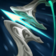

核心裝備
 奪魄之鐮
奪魄之鐮暴擊、攻擊與技能循環都適合頻繁施法的路西恩。
 磁性雷射槍
磁性雷射槍7.2b 攻擊力提高，強化充能普攻與團戰轉火。
 多明尼克的問候
多明尼克的問候7.2b 攻擊力提高，對高護甲前排更穩。

狂風之力提供額外位移，彌補短射程射手的站位壓力。
 無盡之刃
無盡之刃後期把暴擊傷害拉到完整收割強度。

Lucian · 短射程／技能穿插雙槍型暴擊射手
每放一次技能都盡量把雙槍打完整，才能縮短三技冷卻。不要為了打滿大絕站在危險角度；敵方硬控還在時，三技優先橫移或後撤。
本站評級理由：路西恩在單線可用技能後雙槍快速換血，短位移又能重複縮短冷卻；ARAM 隊友控制密集時還能頻繁取得 Vigilance 強化普攻。缺點是射程短，若沒有前排或敵方長手很多，必須更耐心找安全輸出窗口。
近期官方未列路西恩標準 ARAM 專屬百分比修正，本站維持 100%／100%。6.0d 提高成長攻擊並改善三技前中期冷卻；7.2b 同時增強磁性雷射槍與多明尼克的問候攻擊力。
暴擊、攻擊與技能循環都適合頻繁施法的路西恩。
7.2b 攻擊力提高，強化充能普攻與團戰轉火。
7.2b 攻擊力提高，對高護甲前排更穩。

提供額外位移，彌補短射程射手的站位壓力。
後期把暴擊傷害拉到完整收割強度。

攻速讓技能後雙槍與持續輸出更順。

三級鞋補傷害與追擊能力。

技能後雙槍很容易觸發並放大短爆發。

補前中期換血傷害。

對高生命戰士與坦克有穩定收益。

補射手在 ARAM 的持續回血。

每次三技位移都能觸發。

短射程射手必備的保命與追擊位移。

被刺客或強開貼臉時提高生存。
1 技 > 3 技 > 2 技
開局三個基礎技能各 1 級，之後主 1、次 3；大絕能點就點。
利用兵線讓一技穿透消耗，技能後立刻找安全目標打雙槍。三技不要固定往前交，先當作躲技能與縮短距離的工具。
奪魄＋磁性成形後是主要強勢期，跟著控制隊友轉火。每次雙槍都會縮三技冷卻，連招中不要漏掉被動。
敵方長手與控制成形後站位優先。大絕可用來先壓低前排或逼走位，真正普攻輸出時只打最近的安全目標。
 致死宣告
致死宣告替換多明尼克，改用致死宣告提供重創。
 守護天使
守護天使替換狂風或無盡，增加一次復活容錯。
 芮蘭颶風箭
芮蘭颶風箭替換一件單體輸出裝，用芮蘭提高多人普攻效率。
看遊戲卡片下方分類 → 點相同分類 → 看左側 S+／S／A。
每次技能後都會觸發雙槍被動，高頻普攻增幅能穩定吃滿。
技能本身負責啟動被動與刷新三技能，技能循環和普攻同等重要。
三技能冷卻會被雙槍縮短，能頻繁觸發位移型增幅。
目前出裝建立高暴擊率，暴擊卡能直接提高雙槍與持續輸出。
秘術拳擊、二進位之星可形成普攻縮技能、技能加攻速的完整循環。
攻速、射程與多次普攻能進一步提高技能後雙槍的壓力。
v80.13.0 ARAM A 第四批：路西恩沿用 7.2a 當前暴擊核心，納入 7.2b 磁性雷射槍／多明尼克攻擊力增強；標準 ARAM 維持 100%／100%。
ARAM 使用獨立於召喚峽谷的資料集；本站會把官方模式平衡、單線 5v5 特性與出裝／符文適配分開判斷，而不是直接複製峽谷配置。